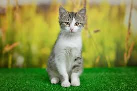

Why should you get a cat?

Cats are independent but still love snuggles.

Their purring is scientifically shown to lower anxiety.

Say goodbye to unwanted rodents and bugs!

Zoomies, quirky antics, and playful surprises every day.